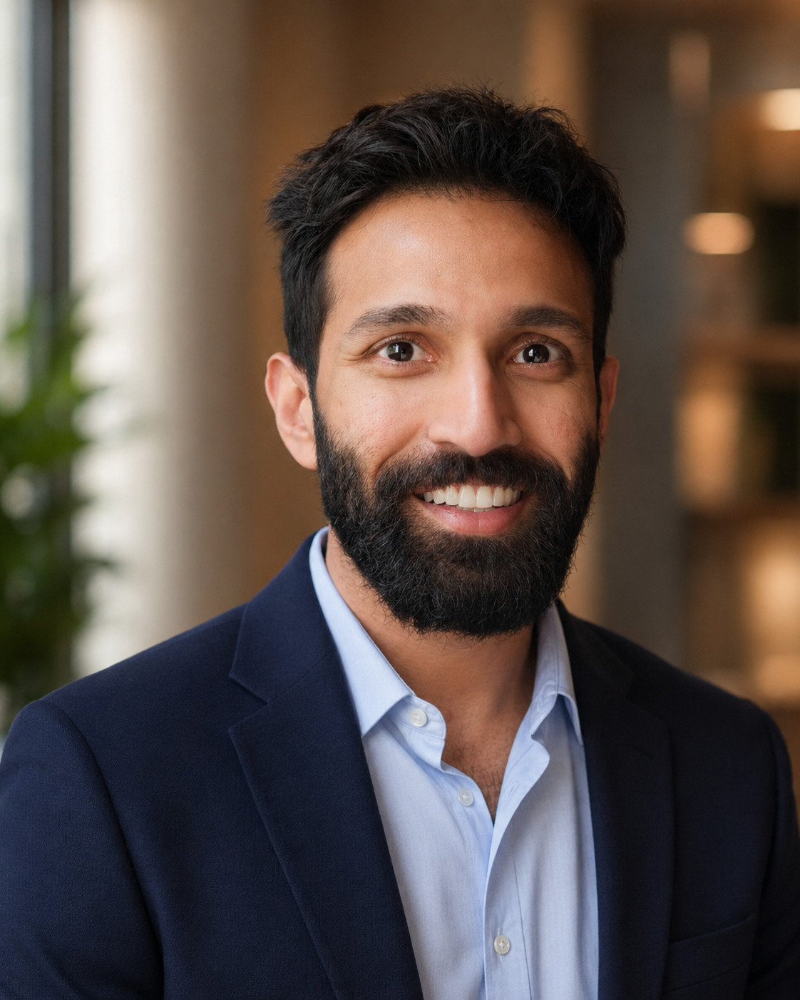

Whitby Clinic, 200 Brock St N · 905-668-3378 (Ext. 3)
Consultations in English, Hindi & Urdu

About Dr. Syed
“What is within your control, we will work on. What isn’t, we will face together.”
Dr. Syed studied medicine at the University of Sheffield and completed his family medicine training in London, England. His clinical experience spans a wide range of specialties, including psychiatry, emergency medicine, and geriatrics, with dedicated qualifications in child health and women's health. That breadth helps him care for patients at every stage of life, from everyday concerns to more complex medical needs.
In appointments he keeps things simple. He listens properly, explains things patiently, and works out a plan with you that fits your life. His interest in the art of communication led him to train in health coaching and to teach students from Imperial College School of Medicine. Bring the will to improve, and he’ll help you find the way.
“What is within your control, we will work on. What isn’t, we will face together.”
Born in India and raised in England, Dr. Syed has lived in four countries and now calls Canada home. He loves to travel, usually with a hiking trail in mind and a camera in hand, and is rarely without a book. He isn’t on speaking terms with heights, but can’t say no to a rollercoaster. He also remains an optimistic but unconvincing guitarist.
Dr. Syed is a UK-trained, certified family physician licensed by the College of Physicians and Surgeons of Ontario. He is accepting new patients at The Whitby Clinic.
At the Clinic
200 Brock Street North
Services
Your family doctor is the place to start for almost any health concern. These are some of the things Dr. Syed helps with.
Not on the list? Bring it anyway. If it needs a specialist, he’ll refer you to the right one.
The things that bring most people in.
Regular reviews, and a plan you understand.
If it’s weighing on you, bring it up.
Small changes, made early, that add up.
From contraception to menopause.
The checkups that tend to get put off.
From the first weeks onwards.
Staying well and independent.
The Clinic
Address
200 Brock Street North
Whitby, ON L1N 4H5
Phone
905-668-3378 (Ext. 3)
Fax
905-668-3807
Dr. Syed's Office Hours
Walk-In Urgent Care (Clinic)
Monday – Thursday: 5:00 pm – 8:00 pm
Saturday: 10:00 am – 2:00 pm
Dr. Syed covers the Wednesday evening walk-in shift.
Common Questions
You can register through the Whitby Clinic's new patient waiting list by clicking the "Register as a New Patient" button on this page. Once your registration is received, our team will be in touch to book your first appointment. Please have your Ontario Health Card ready.
Yes. Dr. Nihaad Syed is currently accepting new patients at the Whitby Clinic, 200 Brock Street North, Whitby, Ontario. Patients of all ages are welcome, from newborns to elderly.
Please bring your valid Ontario Health Card (OHIP), a list of your current medications (including dosages), any relevant medical records or recent test results, and a list of questions or health concerns you'd like to discuss. If you're transferring from another physician, let the clinic know so records can be requested.
Your first visit is a meet-and-greet. Dr. Syed will review your medical history, go over your current medications, and check that you're up to date with any recommended screening and immunisations for your age. He'll arrange baseline blood work and ask about any ongoing health concerns so you can put together a plan, starting with what matters most to you.
Yes. Dr. Syed offers consultations in English, Hindi, and Urdu. Please mention your preferred language when booking and the team will do their best to accommodate.
Dr. Syed welcomes patients from across Durham Region, including Whitby, Oshawa, Ajax, Brooklin, and surrounding communities. The Whitby Clinic is centrally located on Brock Street North with free parking available.
Yes, free parking is available on the north side of the building with two parking lots for patient use. The clinic is also accessible by Durham Region Transit.
The Whitby Clinic building houses a full range of services under one roof: X-ray and ultrasound imaging, mammography (Ontario Breast Screening Program), Lifelabs laboratory for blood work, a pharmacy, physiotherapy, massage therapy, orthotics and bracing, and a medical spa. This means fewer trips and more convenience for your care.
Dr. Syed is accepting new patients of all ages in Whitby and across Durham Region.
Register as a New Patient